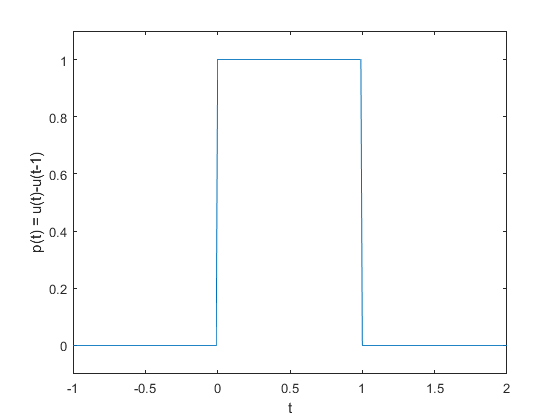

Instituto Politécnico Nacional
Unidad Profesional Interdisciplinaria en Ingeniería y Tecnologías Avanzadas
Integrantes:
- Barrera Angeles Omar Israel
- Galindo Cruz Perla Ariadna
- Garzón Miguel Fabián
Práctica P03: "Señales e tiempo continuo"
Contents
Objetivos
- Manipulación básica de MATLAB
- Gráficas de señales reales y complejas continuas
- Transformación de señales continuas (escalamientos y traslaciones)
- Calculo de energía y potencia de señales continuas
Introducción
Historia del desarrollo de MATLAB
MATLAB es ahora un entorno de computación técnica con todas las funciones, pero comenzó como un simple "Laboratorio de Matrices". Tres hombres, JH Wilkinson, George Forsythe y John Todd, desempeñaron papeles importantes en los orígenes de MATLAB, hace más de 50 años.
MATLAB (Matrix Laboratory, “laboratorios de matrices”). Software matemático con entorno de desarrollo integrado (IDE) que tiene un lenguaje de programación propio (Lenguaje M) y es multiplataforma (Unix, Windows y Apple Mac Os X). Software de un gran uso en Centros de Investigación y desarrollo, así como en universidades.
En 1984 surge la primera versión, creado por Cleve Moler, con la idea de usar paquetes de subrutinas escritas en Fortran en los cursos de Análisis Numérico y Algebra Lineal, sin tener una necesidad de programas que usaran este lenguaje.
El lenguaje de programación M se creó en 1970 proporcionando un acceso sencillo al Software de matrices LINPACK y EISPACK sin tener que hacer uso del lenguaje Fortran.
Ya en 2004 se apreciaba que MATLAB era usado por aproximadamente más de un millón de personas, tanto académicos como empresarios.
Alternativas de Software
- GNU Octave: Puede ser la alternativa más conocida a MATLAB. En desarrollo activo durante casi tres décadas, Octave se ejecuta en Windows, Mac y Linux, y está empaquetado para la mayoría de las distribuciones principales; se esfuerza por una compatibilidad exacta, por lo que muchos de sus proyectos desarrollados para MATLAB pueden ejecutarse en Octave sin necesidad de modificaciones. Octave tiene licencia GPL, y su código fuente se puede encontrar en el sitio FTP de GNU. Enlace: https://www.gnu.org/software/octave/
- Scilab: Es otra opción de código abierto para computación numérica que se ejecuta en todas las plataformas principales: Windows, Mac y Linux incluidos; es quizás la alternativa más conocida fuera de Octave, y (como Octave) es muy similar a MATLAB en su implementación, aunque la compatibilidad exacta no es un objetivo de los desarrolladores del proyecto. Se distribuye como fuente abierta bajo la licencia CeCILL compatible con GPL, y su código fuente está disponible en su página oficial. Enlace: http://www.scilab.org/
- Sage: Otro sistema de software de matemáticas de código abierto que podría ser una buena opción para aquellos que buscan una alternativa de MATLAB. Está construido sobre una variedad de conocidas bibliotecas de computación científica basadas en Python, y su propio lenguaje es sintácticamente similar a Python. Tiene muchas características que incluyen una interfaz de línea de comandos, cuadernos basados en navegador, herramientas para incrustar fórmulas en otros documentos y, por supuesto, muchas bibliotecas matemáticas. Está disponible bajo una licencia GPL, y su código fuente se puede encontrar en el sitio web del proyecto. Enlace: http://www.sagemath.org/index.html
- Genio: Diseñado para manejar matemáticas avanzadas, Genius se describe a sí mismo como un “programa de calculadora de propósito general similar en algunos aspectos a BC, Matlab, Maple o Mathematica”. Para usarlo, necesitará escribir expresiones en un lenguaje llamado GEL (abreviación de “Genius Extension Language”), que es muy similar a los métodos usuales de escribir ecuaciones matemáticas. Sistema operativo: Linux, macOs. Enlace: http://www.jirka.org/genius.html
- Salvia: Un conglomerado de más de 100 aplicaciones de matemáticas y programación de código abierto, la misión de Sage es crear “una alternativa libre y viable de código abierto a Magma, Maple, Mathematica y Matlab”. Ahora también viene en una versión basada en la nube llamada CoCalc que tiene planes de servicio gratuitos y pagados. Sistema operativo: Windows, Linux, macOS. Enlace: http://www.sagemath.org/index.html
Desarrollo
Ejercicio 1: Crea una función que se llame fun1 y reciba dos parametros y la función debe regresar la evaluación , esta función debe trabajar con y
%function [F] = fun1(a,w) %F = a./(a^2 + w.^2); %end
Ejercicio 2: Construya una función que gráfique funciones de $f:R\rightarrow R$en el formato de su elección y pruebe su código mostrando la gráfica de vs en el intervalo para no debe incluir el código, solo el uso de la función para mostrar la gráfica.
a = 1; dw = 1e-6; w = -2:dw:2; F = fun1(a, w); grafica(F, w);
Ejercicio 3: Construya una función que gráfique funciones de n el formato de su elección y pruebe su código mostrando la gráfica de la transformada de Fourier en de la función , puede utilizar una función anonima para este fin, no debe incluir el código, solo el uso de la función para mostrarla gráfica. Reporte la gráfica de de (recuerde que ya tiene una función para esto). Reporte del espectro de magnitud y del espectro de fase en
dt = 1e-6; t = -1:dt:5; figure(1) f = @(t) (exp(-2*t).*(t>=0)); grafica(f(t),t); title 'f(t)'; figure(2) F = fft(f(t), 1000); w = (-500:499)*0.01; grafica(F,w); title 'F(\omega)';
Ejercicio 4: Realiza las mismas operaciones que Lathi en las secciones M1.1 a M1.4 que se encuentra al final del capítulo 1 y antes de la sección de problemas, cambie los inline por funciones anonimas.
M1.1
f = @(t) exp(-t).*cos(2*pi*t); figure(1); t = -2:2; plot(t,f(t)); xlabel('t'); ylabel('f(t)'); grid; figure(2); t = -2:0.01:2; plot(t,f(t)); xlabel('t'); ylabel('f(t)'); grid;
M1.2
u = @(t) t>=0; figure(3) t = (-2:2); plot (t,u(t)); xlabel('t'); ylabel('u(t)'); p = @(t) t>=0 & t<1; figure(4) t = (-1:0.01:2); plot(t,p(t)); xlabel('t'); ylabel('p(t) = u(t)-u(t-1)'); axis ([-1 2 -.1 1.1]);
M1.3
g = @(t) exp(-t).*cos(2*pi*t).*(t>=0); figure(5) t = (-2:0.01:2); plot(t,g(2*t+1)); xlabel('t'); ylabel('g(2t+1)'); grid; figure(6) plot(t,g(-t+1)); xlabel('t'); ylabel('g(-t+1)')'; grid; figure(7) plot(t,g(2*t+1) +g(-t+1)); xlabel('t'); ylabel('h(t)')'; grid;
M1.4
x = @(t) exp(-t).*((t>=0)&(t<1)); t = (0:0.01:1); E_x = sum(x(t).*x(t)*0.01); x_squared = @(t) exp(-2*t).*((t>=0)&(t>1)); E_x2 = quad(x_squared,0,1);
Ejercicio 5: Resuelve el problema 1.2.2 usando las herramientas del paso anterior.
t = -10:1e-3:10; x = @(t) -t.*(t>=-4 & t<0) + t.*(t>=0 & t<2);
figure(1)
plot(t, x(t));
title 'x(t)';
%(a) figure(2) plot(t, x(t-4)); title 'x(t-4)';
%(b) figure(3) plot(t, x(t/1.5)); title 'x(t/1.5)';
%(c) figure(4) plot(t, x(-t)); title 'x(-t)'; %(d)
figure(5) plot(t, x(2*t-4)); title 'x(2*t-4)'; %(e)
figure(6)
plot(t, x(2-t));
title 'x(2-t)';
Ejercicio 6: Escriba una función que se llame energia que reciba como argumento una función (anonima o simbolica) y que regrese el calculo de la energía, para esto puede resultar útil investigar las instrucciones int , integral Se presupone utilizar el código solo con funciones de energia. Muestre el código sin ejecutar, y posteriormente resuelva el problema 1.1.3
dt = 1e-3; t = 0:dt:7;
(a)
x = t>=0 & t<=2; y = (t>=0 & t<1) - (t>=1 & t<=2); figure(1) subplot(211); plot(t,x); title 'x(t)'; xlim([0 3]); ylim([0 1.5]); subplot(212); plot(t,y); title 'y(t)'; xlim([0 3]); ylim([-1.5 1.5]); Emas = energia(x) + energia(y) Emenos = energia(x) - energia(y)
Emas =
4002
Emenos =
0
(b)
x = sin(t).*(t>=0 & t<= 2*pi); y = t>=0 & t<=2*pi; figure(2) subplot(211); plot(t,x); title 'x(t)'; ylim([-1.5 1.5]); subplot(212); plot(t,y); title 'y(t)'; ylim([0 1.5]); Emas = energia(x) + energia(y) Emenos = energia(x) - energia(y)
Emas = 9.4256e+03 Emenos = -3.1424e+03
(c)
x = sin(t).*(t>=0 & t<= pi); y = t>=0 & t<=pi; figure(3) subplot(211); plot(t,x); title 'x(t)'; xlim([0 4]); ylim([-1.5 1.5]); subplot(212); plot(t,y); title 'y(t)'; xlim([0 4]); ylim([0 1.5]); Emas = energia(x) + energia(y) Emenos = energia(x) - energia(y)
Emas = 4.7128e+03 Emenos = -1.5712e+03
Ejercicio 7: Escriba una función que se llame potencia que reciba como argumento una función (anonima o simbolica) y que regrese el calculo de la potencia para esto puede resultar útil investigar las instrucciones int , integral Se presupone utilizar el código solo con funciones de potencia. Muestre el código sin ejecutar, y posteriormente resuelva el problema 1.1.4
T = 4; dt = 1e-6; t = -6:dt:6; f = (t.^3).*(t<-2 & t<2);
%*(a)* f_cuadrada = inline('(-(t.^3).*(t<-2 & t<2)).^2', 't'); P = potencia(f_cuadrada, T)
P =
0
%*(b)* f_cuadrada = inline('(2*(t.^3).*(t<-2 & t<2)).^2', 't'); P = potencia(f_cuadrada, T)
P =
0
Referencias
*s/A. (s/A). MATLAB. 12 de abril de 2019, de EcuRed Sitio web: <https://www.ecured.cu/MATLAB>
*Jason Baker (Red Hat) . (2017). 3 open source alternatives to MATLAB. 12 de abril de 2019, de Opensource.com Sitio web: <https://opensource.com/alternatives/matlab>
*Jaime E. Gómez H. . (2017). Aplicaciones costosas: 78 alternativas de software libre. 12 de abril de 2019, de SkinaTech Sitio web: <https://www.skinatech.com/portal/alternativas-de-software-libre/>
*Cleve Moler. (2004). Los orígenes de MATLAB. 12 de abril de 2019, de MathWorks Sitio web: <https://la.mathworks.com/company/newsletters/articles/the-origins-of-matlab.html>